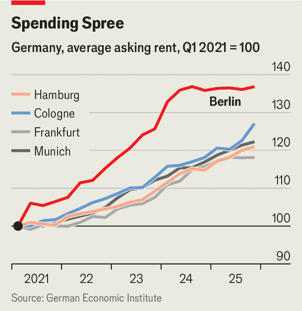

The leftists who want to seize Berlin’s apartments
Die Linke’s radicalism makes it hard for it to form a coalition
Nov 5th 2026
FORMING COALITIONS in Germany is usually a pedestrian affair. Not in Berlin. On September 20th Die Linke, a populist-left outfit, won an election in the capital, one of Germany’s three city-states. But its attempt to build a leftist coalition with the Greens and Social Democrats has been hindered by scandal and strife. Conservatives say Die Linke is riddled with antisemites and pals around with terrorist-coddlers. Hardliners in the party rage against their leaders for conceding to Zionist principles. Senior Social Democrats are urging their comrades in Berlin to pull the plug.
Undeterred, the three parties began negotiating a coalition deal on November 2nd. Its centrepiece will be one of the most radical expropriation plans ever proposed in western Europe: Die Linke’s signature policy to “socialise”, in the preferred lingo, the rental properties of big corporate landlords. “Housing is a human right. And we want to take that right out of the hands of speculators,” said Elif Eralp, Die Linke’s mayoral candidate, before the election.

The idea dates to a referendum held in 2021, after years of surging rents in the once-cheap capital (see chart). Only around 15% of Berliners own their homes, and a clear majority backed a plan to seize properties of corporations that own over 3,000 units, with compensation. The city government kicked it into the long grass. But the idea persisted, and last year the campaigners behind the 2021 initiative wrote a draft bill that could inspire the law to come. Die Linke placed the idea at the heart of its election campaign.
The three notional governing partners have agreed to lift the threshold at which socialisation kicks in to 10,000 units. That means roughly 160,000, or 15%, of Berlin’s private rental homes would be taken into public hands (nearly 130,000 of these belong to Vonovia, Europe’s biggest corporate landlord). Compensation would be capped at €16bn ($18bn). Rental payments in the expropriated flats could service the loans the city or its housing companies incur to finance the compensation. Details will be worked out in coalition talks.
The proposal is all the more ambitious for resting on a never-used article in the German constitution which says “Land, natural resources and means of production…may be transferred to public ownership or other forms of public enterprise.” For decades this clause was ignored as a relic from a time when the young federal republic had not yet committed to market principles. But then the expropriation campaigners latched on to it.
Most economists are deeply sceptical about the proposal. It would do nothing to inspire new construction, though the parties have separately pledged to build 100,000 homes. It would also protect existing tenants, many of whom are not in need, while doing little for newcomers or outsiders. Indeed it is likely to have a chilling effect on construction in the city, says Michael Voigtländer at the German Economic Institute in Cologne.
And investors are horrified. German ministers have been peppered with questions from foreign firms and politicians worried that investment is no longer safe in Germany. Friedrich Merz, the conservative chancellor, has promised to pass a national law to forestall Berlin’s scheme: a striking intervention in state affairs by the federal government.
Opinions differ fiercely on whether that is possible. Mr Merz’s proposal “is so obviously unlawful that it might not even need to be challenged in court”, says Niklas Schenker, a Die Linke member of the Berlin parliament and one of the brains behind the initiative. But opponents say a well-crafted law to protect private investments is perfectly plausible—and that the expropriation proposal itself violates the well-tested legal principle of proportionality. Germany’s constitutional court, in Karlsruhe, is likely to have the final say.
A second hurdle for the plan is working out how to compensate landlords. Mr Voigtländer puts the full market value at around €25bn. But German law does not mandate compensation at full market value, says Isabel Feichtner, a legal scholar at the University of Würzburg. The draft bill suggested that Vonovia and the others could expect to get 40-60% of market value; its proponents say landlords should not profit from land-value appreciation. But Karlsruhe may take a different view.
The court could also frown on the period of repayment: the draft bill proposed 100-year bonds. Berlin cannot afford to further burden its state budget, and borrowing costs are rising. Put it all together, and it is hard to imagine Berlin’s plan bearing fruit. That will not stop it from consuming political energy, deterring investment and harming Germany’s reputation.■